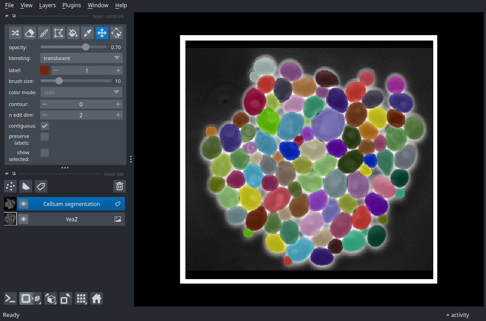

Note
Go to the end to download the full example code.
Phase Microscopy: Yeast#
Downloading CellSAM model weights, please wait...
0%| | 0.00/784M [00:00<?, ?iB/s]
0%| | 268k/784M [00:00<04:57, 2.63MiB/s]
0%| | 555k/784M [00:00<04:42, 2.77MiB/s]
0%| | 946k/784M [00:00<03:58, 3.29MiB/s]
0%| | 1.28M/784M [00:00<04:04, 3.21MiB/s]
0%| | 1.70M/784M [00:00<03:40, 3.55MiB/s]
0%| | 2.16M/784M [00:00<03:20, 3.89MiB/s]
0%| | 2.70M/784M [00:00<02:58, 4.38MiB/s]
0%| | 3.24M/784M [00:00<02:45, 4.70MiB/s]
1%| | 3.96M/784M [00:00<02:23, 5.45MiB/s]
1%| | 4.65M/784M [00:01<02:15, 5.73MiB/s]
1%| | 5.23M/784M [00:01<02:23, 5.44MiB/s]
1%| | 5.85M/784M [00:01<02:17, 5.65MiB/s]
1%| | 6.43M/784M [00:01<02:16, 5.70MiB/s]
1%| | 7.13M/784M [00:01<02:10, 5.95MiB/s]
1%| | 8.09M/784M [00:01<01:50, 7.00MiB/s]
1%| | 8.83M/784M [00:01<01:49, 7.10MiB/s]
1%| | 9.62M/784M [00:01<01:45, 7.31MiB/s]
1%|▏ | 11.0M/784M [00:01<01:24, 9.12MiB/s]
2%|▏ | 12.5M/784M [00:01<01:09, 11.0MiB/s]
2%|▏ | 13.9M/784M [00:02<01:05, 11.7MiB/s]
2%|▏ | 15.5M/784M [00:02<00:59, 13.0MiB/s]
2%|▏ | 16.8M/784M [00:02<01:00, 12.7MiB/s]
2%|▏ | 18.4M/784M [00:02<00:56, 13.6MiB/s]
3%|▎ | 19.7M/784M [00:02<01:24, 9.02MiB/s]
3%|▎ | 20.8M/784M [00:02<01:26, 8.79MiB/s]
3%|▎ | 22.1M/784M [00:02<01:19, 9.52MiB/s]
3%|▎ | 23.2M/784M [00:02<01:15, 10.0MiB/s]
3%|▎ | 24.7M/784M [00:03<01:08, 11.1MiB/s]
3%|▎ | 26.1M/784M [00:03<01:03, 11.9MiB/s]
4%|▎ | 27.6M/784M [00:03<00:59, 12.7MiB/s]
4%|▎ | 29.2M/784M [00:03<00:55, 13.6MiB/s]
4%|▍ | 30.6M/784M [00:03<00:55, 13.6MiB/s]
4%|▍ | 32.0M/784M [00:03<00:55, 13.5MiB/s]
4%|▍ | 33.5M/784M [00:03<00:53, 14.0MiB/s]
4%|▍ | 35.2M/784M [00:03<00:50, 14.8MiB/s]
5%|▍ | 36.7M/784M [00:03<00:49, 14.9MiB/s]
5%|▍ | 38.2M/784M [00:04<00:52, 14.3MiB/s]
5%|▌ | 39.7M/784M [00:04<00:51, 14.3MiB/s]
5%|▌ | 41.1M/784M [00:04<00:54, 13.7MiB/s]
5%|▌ | 42.5M/784M [00:04<01:11, 10.4MiB/s]
6%|▌ | 44.1M/784M [00:04<01:04, 11.5MiB/s]
6%|▌ | 45.5M/784M [00:04<01:00, 12.2MiB/s]
6%|▌ | 46.9M/784M [00:04<00:58, 12.7MiB/s]
6%|▌ | 48.5M/784M [00:04<00:54, 13.5MiB/s]
6%|▋ | 50.1M/784M [00:04<00:52, 14.0MiB/s]
7%|▋ | 51.6M/784M [00:05<00:57, 12.7MiB/s]
7%|▋ | 52.9M/784M [00:05<01:10, 10.4MiB/s]
7%|▋ | 54.4M/784M [00:05<01:03, 11.6MiB/s]
7%|▋ | 56.1M/784M [00:05<00:56, 12.9MiB/s]
7%|▋ | 57.5M/784M [00:05<00:56, 12.9MiB/s]
8%|▊ | 59.0M/784M [00:05<00:53, 13.5MiB/s]
8%|▊ | 60.5M/784M [00:05<00:52, 13.9MiB/s]
8%|▊ | 62.3M/784M [00:05<00:48, 14.8MiB/s]
8%|▊ | 63.8M/784M [00:05<00:48, 14.8MiB/s]
8%|▊ | 65.6M/784M [00:06<00:46, 15.5MiB/s]
9%|▊ | 67.5M/784M [00:06<00:43, 16.3MiB/s]
9%|▉ | 69.1M/784M [00:06<01:08, 10.5MiB/s]
9%|▉ | 70.4M/784M [00:06<01:17, 9.23MiB/s]
9%|▉ | 72.0M/784M [00:06<01:07, 10.6MiB/s]
9%|▉ | 73.7M/784M [00:06<00:59, 12.0MiB/s]
10%|▉ | 75.4M/784M [00:06<00:53, 13.2MiB/s]
10%|▉ | 77.1M/784M [00:07<00:50, 14.1MiB/s]
10%|█ | 78.7M/784M [00:07<00:47, 14.7MiB/s]
10%|█ | 80.5M/784M [00:07<00:45, 15.5MiB/s]
10%|█ | 82.1M/784M [00:07<00:53, 13.1MiB/s]
11%|█ | 83.7M/784M [00:07<00:50, 13.8MiB/s]
11%|█ | 85.3M/784M [00:07<00:48, 14.3MiB/s]
11%|█ | 87.0M/784M [00:07<00:46, 15.0MiB/s]
11%|█▏ | 88.6M/784M [00:07<00:47, 14.7MiB/s]
12%|█▏ | 90.3M/784M [00:07<00:44, 15.4MiB/s]
12%|█▏ | 91.9M/784M [00:08<00:44, 15.5MiB/s]
12%|█▏ | 93.5M/784M [00:08<00:43, 15.8MiB/s]
12%|█▏ | 95.1M/784M [00:08<00:43, 15.7MiB/s]
12%|█▏ | 96.8M/784M [00:08<00:42, 16.0MiB/s]
13%|█▎ | 98.4M/784M [00:08<00:42, 16.1MiB/s]
13%|█▎ | 100M/784M [00:08<00:43, 15.8MiB/s]
13%|█▎ | 102M/784M [00:08<00:44, 15.2MiB/s]
13%|█▎ | 103M/784M [00:08<00:44, 15.4MiB/s]
13%|█▎ | 105M/784M [00:08<00:42, 16.0MiB/s]
14%|█▎ | 107M/784M [00:08<00:42, 15.8MiB/s]
14%|█▍ | 108M/784M [00:09<00:42, 16.1MiB/s]
14%|█▍ | 110M/784M [00:09<00:41, 16.4MiB/s]
14%|█▍ | 112M/784M [00:09<00:41, 16.3MiB/s]
14%|█▍ | 113M/784M [00:09<00:41, 16.1MiB/s]
15%|█▍ | 115M/784M [00:09<00:40, 16.6MiB/s]
15%|█▍ | 117M/784M [00:09<00:41, 16.1MiB/s]
15%|█▌ | 118M/784M [00:09<00:40, 16.4MiB/s]
15%|█▌ | 120M/784M [00:09<00:39, 16.6MiB/s]
16%|█▌ | 122M/784M [00:09<00:40, 16.3MiB/s]
16%|█▌ | 123M/784M [00:10<00:41, 16.0MiB/s]
16%|█▌ | 125M/784M [00:10<00:54, 12.2MiB/s]
16%|█▌ | 126M/784M [00:10<01:24, 7.79MiB/s]
16%|█▋ | 127M/784M [00:10<01:27, 7.54MiB/s]
16%|█▋ | 129M/784M [00:10<01:16, 8.55MiB/s]
17%|█▋ | 130M/784M [00:10<01:04, 10.2MiB/s]
17%|█▋ | 132M/784M [00:11<00:55, 11.8MiB/s]
17%|█▋ | 134M/784M [00:11<00:49, 13.0MiB/s]
17%|█▋ | 135M/784M [00:11<00:50, 12.9MiB/s]
17%|█▋ | 137M/784M [00:11<00:59, 10.9MiB/s]
18%|█▊ | 138M/784M [00:11<00:51, 12.6MiB/s]
18%|█▊ | 140M/784M [00:11<00:47, 13.4MiB/s]
18%|█▊ | 142M/784M [00:11<00:47, 13.6MiB/s]
18%|█▊ | 143M/784M [00:11<00:44, 14.4MiB/s]
18%|█▊ | 145M/784M [00:11<00:47, 13.4MiB/s]
19%|█▊ | 146M/784M [00:12<00:44, 14.3MiB/s]
19%|█▉ | 148M/784M [00:12<00:41, 15.3MiB/s]
19%|█▉ | 150M/784M [00:12<00:42, 14.9MiB/s]
19%|█▉ | 151M/784M [00:12<00:41, 15.1MiB/s]
20%|█▉ | 153M/784M [00:12<00:40, 15.5MiB/s]
20%|█▉ | 155M/784M [00:12<00:39, 15.8MiB/s]
20%|█▉ | 156M/784M [00:12<00:38, 16.4MiB/s]
20%|██ | 158M/784M [00:12<00:37, 16.7MiB/s]
20%|██ | 160M/784M [00:12<00:37, 16.5MiB/s]
21%|██ | 162M/784M [00:12<00:37, 16.6MiB/s]
21%|██ | 163M/784M [00:13<00:37, 16.6MiB/s]
21%|██ | 165M/784M [00:13<00:38, 16.2MiB/s]
21%|██ | 167M/784M [00:13<00:38, 16.2MiB/s]
21%|██▏ | 168M/784M [00:13<00:38, 16.1MiB/s]
22%|██▏ | 170M/784M [00:13<00:39, 15.6MiB/s]
22%|██▏ | 171M/784M [00:13<00:41, 14.9MiB/s]
22%|██▏ | 173M/784M [00:13<00:43, 14.1MiB/s]
22%|██▏ | 174M/784M [00:13<00:42, 14.2MiB/s]
22%|██▏ | 176M/784M [00:13<00:45, 13.3MiB/s]
23%|██▎ | 177M/784M [00:14<00:55, 11.0MiB/s]
23%|██▎ | 178M/784M [00:14<00:54, 11.1MiB/s]
23%|██▎ | 180M/784M [00:14<00:53, 11.4MiB/s]
23%|██▎ | 181M/784M [00:14<00:50, 11.8MiB/s]
23%|██▎ | 182M/784M [00:14<00:49, 12.2MiB/s]
23%|██▎ | 183M/784M [00:14<00:54, 10.9MiB/s]
24%|██▎ | 185M/784M [00:14<00:53, 11.3MiB/s]
24%|██▎ | 186M/784M [00:14<00:53, 11.2MiB/s]
24%|██▍ | 187M/784M [00:15<00:52, 11.4MiB/s]
24%|██▍ | 188M/784M [00:15<00:51, 11.6MiB/s]
24%|██▍ | 189M/784M [00:15<00:49, 11.9MiB/s]
24%|██▍ | 191M/784M [00:15<00:49, 12.0MiB/s]
24%|██▍ | 192M/784M [00:15<00:49, 11.9MiB/s]
25%|██▍ | 193M/784M [00:15<00:58, 10.0MiB/s]
25%|██▍ | 194M/784M [00:15<00:55, 10.6MiB/s]
25%|██▍ | 196M/784M [00:15<00:52, 11.2MiB/s]
25%|██▌ | 197M/784M [00:15<00:50, 11.5MiB/s]
25%|██▌ | 198M/784M [00:16<00:52, 11.2MiB/s]
25%|██▌ | 199M/784M [00:16<00:51, 11.4MiB/s]
26%|██▌ | 201M/784M [00:16<00:50, 11.7MiB/s]
26%|██▌ | 202M/784M [00:16<00:57, 10.2MiB/s]
26%|██▌ | 203M/784M [00:16<01:00, 9.62MiB/s]
26%|██▌ | 204M/784M [00:16<00:55, 10.4MiB/s]
26%|██▌ | 205M/784M [00:16<00:52, 11.0MiB/s]
26%|██▋ | 206M/784M [00:16<01:11, 8.02MiB/s]
27%|██▋ | 208M/784M [00:17<01:01, 9.32MiB/s]
27%|██▋ | 209M/784M [00:17<00:53, 10.6MiB/s]
27%|██▋ | 211M/784M [00:17<00:49, 11.5MiB/s]
27%|██▋ | 212M/784M [00:17<00:46, 12.3MiB/s]
27%|██▋ | 214M/784M [00:17<00:53, 10.7MiB/s]
27%|██▋ | 215M/784M [00:17<00:51, 11.1MiB/s]
28%|██▊ | 216M/784M [00:17<00:51, 10.9MiB/s]
28%|██▊ | 217M/784M [00:17<00:54, 10.5MiB/s]
28%|██▊ | 218M/784M [00:17<00:54, 10.3MiB/s]
28%|██▊ | 219M/784M [00:18<00:56, 9.96MiB/s]
28%|██▊ | 220M/784M [00:18<01:01, 9.22MiB/s]
28%|██▊ | 222M/784M [00:18<00:55, 10.1MiB/s]
28%|██▊ | 223M/784M [00:18<00:56, 9.99MiB/s]
29%|██▊ | 224M/784M [00:18<00:59, 9.37MiB/s]
29%|██▊ | 225M/784M [00:18<00:58, 9.61MiB/s]
29%|██▉ | 226M/784M [00:18<00:56, 9.87MiB/s]
29%|██▉ | 227M/784M [00:18<00:54, 10.2MiB/s]
29%|██▉ | 228M/784M [00:18<00:57, 9.64MiB/s]
29%|██▉ | 229M/784M [00:19<01:04, 8.64MiB/s]
29%|██▉ | 230M/784M [00:19<01:06, 8.35MiB/s]
29%|██▉ | 231M/784M [00:19<01:05, 8.49MiB/s]
30%|██▉ | 232M/784M [00:19<01:05, 8.47MiB/s]
30%|██▉ | 232M/784M [00:19<01:05, 8.42MiB/s]
30%|██▉ | 233M/784M [00:19<01:26, 6.33MiB/s]
30%|██▉ | 234M/784M [00:19<01:20, 6.80MiB/s]
30%|██▉ | 235M/784M [00:19<01:15, 7.28MiB/s]
30%|███ | 236M/784M [00:20<01:12, 7.52MiB/s]
30%|███ | 237M/784M [00:20<01:16, 7.13MiB/s]
30%|███ | 237M/784M [00:20<01:22, 6.58MiB/s]
30%|███ | 238M/784M [00:20<01:31, 5.97MiB/s]
30%|███ | 239M/784M [00:20<01:26, 6.29MiB/s]
31%|███ | 240M/784M [00:20<01:16, 7.11MiB/s]
31%|███ | 241M/784M [00:20<01:15, 7.17MiB/s]
31%|███ | 242M/784M [00:20<01:11, 7.59MiB/s]
31%|███ | 242M/784M [00:21<01:16, 7.10MiB/s]
31%|███ | 243M/784M [00:21<01:20, 6.76MiB/s]
31%|███ | 244M/784M [00:21<01:24, 6.42MiB/s]
31%|███▏ | 245M/784M [00:21<01:06, 8.13MiB/s]
31%|███▏ | 246M/784M [00:21<00:57, 9.37MiB/s]
32%|███▏ | 248M/784M [00:21<00:51, 10.4MiB/s]
32%|███▏ | 249M/784M [00:21<00:47, 11.3MiB/s]
32%|███▏ | 250M/784M [00:21<00:44, 11.9MiB/s]
32%|███▏ | 252M/784M [00:21<00:41, 12.9MiB/s]
32%|███▏ | 253M/784M [00:21<00:46, 11.4MiB/s]
32%|███▏ | 254M/784M [00:22<00:55, 9.60MiB/s]
33%|███▎ | 256M/784M [00:22<00:50, 10.4MiB/s]
33%|███▎ | 257M/784M [00:22<00:46, 11.4MiB/s]
33%|███▎ | 258M/784M [00:22<00:42, 12.2MiB/s]
33%|███▎ | 260M/784M [00:22<00:40, 12.8MiB/s]
33%|███▎ | 262M/784M [00:22<00:38, 13.6MiB/s]
34%|███▎ | 263M/784M [00:22<00:50, 10.3MiB/s]
34%|███▎ | 264M/784M [00:22<00:46, 11.3MiB/s]
34%|███▍ | 266M/784M [00:23<00:43, 12.0MiB/s]
34%|███▍ | 267M/784M [00:23<00:40, 12.7MiB/s]
34%|███▍ | 269M/784M [00:23<00:40, 12.6MiB/s]
34%|███▍ | 270M/784M [00:23<00:38, 13.3MiB/s]
35%|███▍ | 272M/784M [00:23<00:35, 14.2MiB/s]
35%|███▍ | 273M/784M [00:23<00:36, 14.1MiB/s]
35%|███▌ | 275M/784M [00:23<00:35, 14.3MiB/s]
35%|███▌ | 276M/784M [00:23<00:33, 15.0MiB/s]
35%|███▌ | 278M/784M [00:23<00:32, 15.4MiB/s]
36%|███▌ | 280M/784M [00:24<00:32, 15.6MiB/s]
36%|███▌ | 281M/784M [00:24<00:31, 16.1MiB/s]
36%|███▌ | 283M/784M [00:24<00:30, 16.2MiB/s]
36%|███▋ | 285M/784M [00:24<00:30, 16.4MiB/s]
37%|███▋ | 287M/784M [00:24<00:30, 16.4MiB/s]
37%|███▋ | 288M/784M [00:24<00:30, 16.2MiB/s]
37%|███▋ | 290M/784M [00:24<00:31, 15.6MiB/s]
37%|███▋ | 291M/784M [00:24<00:31, 15.8MiB/s]
37%|███▋ | 293M/784M [00:24<00:30, 15.9MiB/s]
38%|███▊ | 295M/784M [00:24<00:30, 15.8MiB/s]
38%|███▊ | 296M/784M [00:25<00:30, 15.9MiB/s]
38%|███▊ | 298M/784M [00:25<00:30, 15.8MiB/s]
38%|███▊ | 299M/784M [00:25<00:30, 15.8MiB/s]
38%|███▊ | 301M/784M [00:25<00:30, 15.8MiB/s]
39%|███▊ | 303M/784M [00:25<00:30, 15.9MiB/s]
39%|███▉ | 304M/784M [00:25<00:29, 16.2MiB/s]
39%|███▉ | 306M/784M [00:25<00:29, 16.1MiB/s]
39%|███▉ | 308M/784M [00:25<00:29, 16.1MiB/s]
39%|███▉ | 309M/784M [00:25<00:29, 16.0MiB/s]
40%|███▉ | 311M/784M [00:25<00:29, 16.1MiB/s]
40%|███▉ | 313M/784M [00:26<00:28, 16.6MiB/s]
40%|████ | 314M/784M [00:26<00:28, 16.5MiB/s]
40%|████ | 316M/784M [00:26<00:29, 15.6MiB/s]
41%|████ | 318M/784M [00:26<00:35, 13.1MiB/s]
41%|████ | 319M/784M [00:26<00:39, 11.7MiB/s]
41%|████ | 321M/784M [00:26<00:36, 12.5MiB/s]
41%|████ | 322M/784M [00:26<00:35, 13.1MiB/s]
41%|████▏ | 323M/784M [00:26<00:37, 12.4MiB/s]
41%|████▏ | 325M/784M [00:27<00:42, 10.7MiB/s]
42%|████▏ | 326M/784M [00:27<00:49, 9.19MiB/s]
42%|████▏ | 327M/784M [00:27<00:54, 8.46MiB/s]
42%|████▏ | 328M/784M [00:27<00:51, 8.85MiB/s]
42%|████▏ | 329M/784M [00:27<00:50, 8.96MiB/s]
42%|████▏ | 330M/784M [00:27<00:50, 9.01MiB/s]
42%|████▏ | 331M/784M [00:27<00:48, 9.34MiB/s]
42%|████▏ | 333M/784M [00:27<00:38, 11.7MiB/s]
43%|████▎ | 334M/784M [00:28<00:35, 12.7MiB/s]
43%|████▎ | 336M/784M [00:28<00:32, 13.8MiB/s]
43%|████▎ | 337M/784M [00:28<00:30, 14.7MiB/s]
43%|████▎ | 339M/784M [00:28<00:29, 15.0MiB/s]
43%|████▎ | 341M/784M [00:28<00:35, 12.6MiB/s]
44%|████▎ | 342M/784M [00:28<00:37, 11.9MiB/s]
44%|████▍ | 343M/784M [00:28<00:34, 12.8MiB/s]
44%|████▍ | 345M/784M [00:28<00:35, 12.3MiB/s]
44%|████▍ | 346M/784M [00:28<00:38, 11.5MiB/s]
44%|████▍ | 348M/784M [00:29<00:35, 12.4MiB/s]
45%|████▍ | 349M/784M [00:29<00:34, 12.8MiB/s]
45%|████▍ | 350M/784M [00:29<00:32, 13.2MiB/s]
45%|████▍ | 352M/784M [00:29<00:31, 13.6MiB/s]
45%|████▌ | 353M/784M [00:29<00:30, 14.0MiB/s]
45%|████▌ | 355M/784M [00:29<00:29, 14.6MiB/s]
46%|████▌ | 357M/784M [00:29<00:27, 15.3MiB/s]
46%|████▌ | 358M/784M [00:29<00:27, 15.7MiB/s]
46%|████▌ | 360M/784M [00:29<00:28, 15.1MiB/s]
46%|████▌ | 362M/784M [00:29<00:27, 15.5MiB/s]
46%|████▋ | 363M/784M [00:30<00:26, 15.8MiB/s]
47%|████▋ | 365M/784M [00:30<00:25, 16.2MiB/s]
47%|████▋ | 367M/784M [00:30<00:25, 16.3MiB/s]
47%|████▋ | 368M/784M [00:30<00:25, 16.0MiB/s]
47%|████▋ | 370M/784M [00:30<00:25, 16.0MiB/s]
47%|████▋ | 372M/784M [00:30<00:25, 16.3MiB/s]
48%|████▊ | 373M/784M [00:30<00:25, 16.0MiB/s]
48%|████▊ | 375M/784M [00:30<00:25, 16.0MiB/s]
48%|████▊ | 377M/784M [00:30<00:25, 15.8MiB/s]
48%|████▊ | 378M/784M [00:31<00:25, 15.9MiB/s]
48%|████▊ | 380M/784M [00:31<00:31, 12.9MiB/s]
49%|████▊ | 381M/784M [00:31<00:33, 11.9MiB/s]
49%|████▉ | 382M/784M [00:31<00:34, 11.6MiB/s]
49%|████▉ | 384M/784M [00:31<00:34, 11.7MiB/s]
49%|████▉ | 385M/784M [00:31<00:31, 12.6MiB/s]
49%|████▉ | 387M/784M [00:31<00:29, 13.6MiB/s]
50%|████▉ | 388M/784M [00:31<00:27, 14.3MiB/s]
50%|████▉ | 390M/784M [00:31<00:27, 14.5MiB/s]
50%|████▉ | 391M/784M [00:32<00:26, 14.7MiB/s]
50%|█████ | 393M/784M [00:32<00:26, 14.8MiB/s]
50%|█████ | 394M/784M [00:32<00:26, 14.9MiB/s]
51%|█████ | 396M/784M [00:32<00:25, 15.1MiB/s]
51%|█████ | 397M/784M [00:32<00:34, 11.1MiB/s]
51%|█████ | 399M/784M [00:32<00:31, 12.2MiB/s]
51%|█████ | 401M/784M [00:32<00:29, 13.1MiB/s]
51%|█████▏ | 402M/784M [00:32<00:28, 13.4MiB/s]
51%|█████▏ | 403M/784M [00:33<00:30, 12.6MiB/s]
52%|█████▏ | 406M/784M [00:33<00:25, 14.8MiB/s]
52%|█████▏ | 407M/784M [00:33<00:30, 12.4MiB/s]
52%|█████▏ | 409M/784M [00:33<00:28, 13.1MiB/s]
52%|█████▏ | 410M/784M [00:33<00:26, 13.9MiB/s]
53%|█████▎ | 412M/784M [00:33<00:34, 10.9MiB/s]
53%|█████▎ | 413M/784M [00:33<00:30, 12.0MiB/s]
53%|█████▎ | 415M/784M [00:33<00:28, 13.1MiB/s]
53%|█████▎ | 417M/784M [00:34<00:26, 13.9MiB/s]
53%|█████▎ | 418M/784M [00:34<00:25, 14.5MiB/s]
54%|█████▎ | 420M/784M [00:34<00:25, 14.5MiB/s]
54%|█████▍ | 421M/784M [00:34<00:24, 14.9MiB/s]
54%|█████▍ | 423M/784M [00:34<00:23, 15.2MiB/s]
54%|█████▍ | 425M/784M [00:34<00:23, 15.3MiB/s]
54%|█████▍ | 426M/784M [00:34<00:22, 15.9MiB/s]
55%|█████▍ | 428M/784M [00:34<00:22, 15.9MiB/s]
55%|█████▍ | 429M/784M [00:34<00:22, 15.9MiB/s]
55%|█████▌ | 431M/784M [00:34<00:21, 16.2MiB/s]
55%|█████▌ | 433M/784M [00:35<00:22, 15.9MiB/s]
55%|█████▌ | 435M/784M [00:35<00:21, 16.1MiB/s]
56%|█████▌ | 436M/784M [00:35<00:22, 15.6MiB/s]
56%|█████▌ | 438M/784M [00:35<00:22, 15.6MiB/s]
56%|█████▌ | 439M/784M [00:35<00:22, 15.6MiB/s]
56%|█████▋ | 441M/784M [00:35<00:21, 16.2MiB/s]
56%|█████▋ | 443M/784M [00:35<00:20, 16.4MiB/s]
57%|█████▋ | 444M/784M [00:35<00:20, 16.5MiB/s]
57%|█████▋ | 446M/784M [00:35<00:21, 16.0MiB/s]
57%|█████▋ | 448M/784M [00:35<00:20, 16.3MiB/s]
57%|█████▋ | 449M/784M [00:36<00:20, 16.3MiB/s]
58%|█████▊ | 451M/784M [00:36<00:20, 16.0MiB/s]
58%|█████▊ | 453M/784M [00:36<00:23, 14.3MiB/s]
58%|█████▊ | 454M/784M [00:36<00:25, 12.7MiB/s]
58%|█████▊ | 455M/784M [00:36<00:26, 12.5MiB/s]
58%|█████▊ | 457M/784M [00:36<00:26, 12.5MiB/s]
58%|█████▊ | 458M/784M [00:36<00:26, 12.1MiB/s]
59%|█████▊ | 459M/784M [00:36<00:26, 12.1MiB/s]
59%|█████▉ | 460M/784M [00:36<00:27, 11.7MiB/s]
59%|█████▉ | 462M/784M [00:37<00:27, 11.5MiB/s]
59%|█████▉ | 463M/784M [00:37<00:27, 11.5MiB/s]
59%|█████▉ | 464M/784M [00:37<00:26, 12.2MiB/s]
59%|█████▉ | 466M/784M [00:37<00:25, 12.6MiB/s]
60%|█████▉ | 467M/784M [00:37<00:25, 12.5MiB/s]
60%|█████▉ | 468M/784M [00:37<00:31, 10.0MiB/s]
60%|█████▉ | 469M/784M [00:37<00:37, 8.39MiB/s]
60%|██████ | 470M/784M [00:37<00:34, 9.03MiB/s]
60%|██████ | 472M/784M [00:38<00:31, 9.95MiB/s]
60%|██████ | 473M/784M [00:38<00:28, 10.8MiB/s]
61%|██████ | 474M/784M [00:38<00:26, 11.5MiB/s]
61%|██████ | 476M/784M [00:38<00:25, 12.3MiB/s]
61%|██████ | 477M/784M [00:38<00:24, 12.5MiB/s]
61%|██████ | 479M/784M [00:38<00:23, 13.0MiB/s]
61%|██████ | 480M/784M [00:38<00:23, 12.8MiB/s]
61%|██████▏ | 481M/784M [00:38<00:23, 12.8MiB/s]
62%|██████▏ | 483M/784M [00:38<00:23, 13.0MiB/s]
62%|██████▏ | 484M/784M [00:38<00:23, 13.0MiB/s]
62%|██████▏ | 485M/784M [00:39<00:22, 13.0MiB/s]
62%|██████▏ | 487M/784M [00:39<00:22, 13.5MiB/s]
62%|██████▏ | 488M/784M [00:39<00:22, 13.4MiB/s]
62%|██████▏ | 489M/784M [00:39<00:21, 13.4MiB/s]
63%|██████▎ | 491M/784M [00:39<00:22, 13.1MiB/s]
63%|██████▎ | 492M/784M [00:39<00:21, 13.4MiB/s]
63%|██████▎ | 493M/784M [00:39<00:21, 13.3MiB/s]
63%|██████▎ | 495M/784M [00:39<00:20, 14.0MiB/s]
63%|██████▎ | 496M/784M [00:39<00:20, 13.9MiB/s]
64%|██████▎ | 498M/784M [00:40<00:20, 13.7MiB/s]
64%|██████▎ | 499M/784M [00:40<00:20, 13.9MiB/s]
64%|██████▍ | 501M/784M [00:40<00:20, 14.0MiB/s]
64%|██████▍ | 502M/784M [00:40<00:20, 13.5MiB/s]
64%|██████▍ | 504M/784M [00:40<00:19, 14.2MiB/s]
64%|██████▍ | 505M/784M [00:40<00:19, 14.6MiB/s]
65%|██████▍ | 507M/784M [00:40<00:18, 14.8MiB/s]
65%|██████▍ | 508M/784M [00:40<00:18, 14.8MiB/s]
65%|██████▌ | 510M/784M [00:40<00:19, 13.7MiB/s]
65%|██████▌ | 511M/784M [00:40<00:20, 13.4MiB/s]
65%|██████▌ | 512M/784M [00:41<00:20, 13.4MiB/s]
66%|██████▌ | 514M/784M [00:41<00:21, 12.3MiB/s]
66%|██████▌ | 515M/784M [00:41<00:21, 12.6MiB/s]
66%|██████▌ | 516M/784M [00:41<00:21, 12.4MiB/s]
66%|██████▌ | 518M/784M [00:41<00:21, 12.6MiB/s]
66%|██████▌ | 519M/784M [00:41<00:20, 13.0MiB/s]
66%|██████▋ | 520M/784M [00:41<00:20, 12.8MiB/s]
67%|██████▋ | 522M/784M [00:41<00:20, 12.9MiB/s]
67%|██████▋ | 523M/784M [00:41<00:20, 12.7MiB/s]
67%|██████▋ | 524M/784M [00:42<00:20, 12.8MiB/s]
67%|██████▋ | 526M/784M [00:42<00:19, 13.0MiB/s]
67%|██████▋ | 527M/784M [00:42<00:19, 13.2MiB/s]
67%|██████▋ | 529M/784M [00:42<00:18, 13.8MiB/s]
68%|██████▊ | 530M/784M [00:42<00:19, 13.3MiB/s]
68%|██████▊ | 532M/784M [00:42<00:17, 14.3MiB/s]
68%|██████▊ | 533M/784M [00:42<00:17, 14.5MiB/s]
68%|██████▊ | 535M/784M [00:42<00:17, 14.3MiB/s]
68%|██████▊ | 536M/784M [00:42<00:20, 11.9MiB/s]
69%|██████▊ | 537M/784M [00:43<00:22, 10.9MiB/s]
69%|██████▉ | 539M/784M [00:43<00:20, 12.0MiB/s]
69%|██████▉ | 540M/784M [00:43<00:19, 12.4MiB/s]
69%|██████▉ | 541M/784M [00:43<00:19, 12.5MiB/s]
69%|██████▉ | 543M/784M [00:43<00:18, 13.0MiB/s]
69%|██████▉ | 544M/784M [00:43<00:17, 13.5MiB/s]
70%|██████▉ | 546M/784M [00:43<00:18, 12.7MiB/s]
70%|██████▉ | 547M/784M [00:43<00:18, 13.0MiB/s]
70%|██████▉ | 548M/784M [00:43<00:18, 13.0MiB/s]
70%|███████ | 550M/784M [00:44<00:19, 11.9MiB/s]
70%|███████ | 551M/784M [00:44<00:18, 12.6MiB/s]
71%|███████ | 553M/784M [00:44<00:16, 13.6MiB/s]
71%|███████ | 554M/784M [00:44<00:16, 13.6MiB/s]
71%|███████ | 556M/784M [00:44<00:16, 13.6MiB/s]
71%|███████ | 557M/784M [00:44<00:16, 13.7MiB/s]
71%|███████ | 558M/784M [00:44<00:17, 13.0MiB/s]
71%|███████▏ | 560M/784M [00:44<00:15, 14.0MiB/s]
72%|███████▏ | 562M/784M [00:44<00:15, 14.4MiB/s]
72%|███████▏ | 563M/784M [00:44<00:15, 13.9MiB/s]
72%|███████▏ | 565M/784M [00:45<00:15, 14.1MiB/s]
72%|███████▏ | 566M/784M [00:45<00:15, 14.2MiB/s]
72%|███████▏ | 567M/784M [00:45<00:15, 14.3MiB/s]
73%|███████▎ | 569M/784M [00:45<00:14, 15.0MiB/s]
73%|███████▎ | 571M/784M [00:45<00:14, 14.8MiB/s]
73%|███████▎ | 572M/784M [00:45<00:14, 14.6MiB/s]
73%|███████▎ | 574M/784M [00:45<00:14, 14.4MiB/s]
73%|███████▎ | 575M/784M [00:45<00:14, 14.5MiB/s]
74%|███████▎ | 577M/784M [00:45<00:14, 14.8MiB/s]
74%|███████▍ | 578M/784M [00:45<00:13, 14.8MiB/s]
74%|███████▍ | 580M/784M [00:46<00:13, 15.1MiB/s]
74%|███████▍ | 581M/784M [00:46<00:13, 14.8MiB/s]
74%|███████▍ | 583M/784M [00:46<00:13, 15.1MiB/s]
75%|███████▍ | 584M/784M [00:46<00:13, 15.2MiB/s]
75%|███████▍ | 586M/784M [00:46<00:13, 14.5MiB/s]
75%|███████▍ | 587M/784M [00:46<00:14, 13.8MiB/s]
75%|███████▌ | 589M/784M [00:46<00:14, 13.9MiB/s]
75%|███████▌ | 590M/784M [00:46<00:13, 13.8MiB/s]
76%|███████▌ | 592M/784M [00:46<00:13, 14.7MiB/s]
76%|███████▌ | 593M/784M [00:47<00:12, 15.2MiB/s]
76%|███████▌ | 595M/784M [00:47<00:12, 15.2MiB/s]
76%|███████▌ | 597M/784M [00:47<00:12, 15.3MiB/s]
76%|███████▋ | 598M/784M [00:47<00:11, 15.6MiB/s]
77%|███████▋ | 600M/784M [00:47<00:11, 15.7MiB/s]
77%|███████▋ | 601M/784M [00:47<00:11, 15.4MiB/s]
77%|███████▋ | 603M/784M [00:47<00:11, 15.4MiB/s]
77%|███████▋ | 604M/784M [00:47<00:11, 15.3MiB/s]
77%|███████▋ | 606M/784M [00:47<00:11, 15.6MiB/s]
78%|███████▊ | 608M/784M [00:47<00:11, 15.3MiB/s]
78%|███████▊ | 609M/784M [00:48<00:12, 14.5MiB/s]
78%|███████▊ | 611M/784M [00:48<00:15, 11.0MiB/s]
78%|███████▊ | 612M/784M [00:48<00:14, 11.8MiB/s]
78%|███████▊ | 614M/784M [00:48<00:13, 12.8MiB/s]
79%|███████▊ | 615M/784M [00:48<00:12, 14.0MiB/s]
79%|███████▊ | 617M/784M [00:48<00:11, 14.6MiB/s]
79%|███████▉ | 619M/784M [00:48<00:11, 14.8MiB/s]
79%|███████▉ | 620M/784M [00:48<00:11, 14.7MiB/s]
79%|███████▉ | 622M/784M [00:48<00:11, 14.5MiB/s]
79%|███████▉ | 623M/784M [00:49<00:11, 14.5MiB/s]
80%|███████▉ | 625M/784M [00:49<00:10, 15.3MiB/s]
80%|███████▉ | 626M/784M [00:49<00:10, 15.5MiB/s]
80%|████████ | 628M/784M [00:49<00:09, 15.7MiB/s]
80%|████████ | 630M/784M [00:49<00:09, 15.7MiB/s]
81%|████████ | 631M/784M [00:49<00:09, 15.9MiB/s]
81%|████████ | 633M/784M [00:49<00:09, 16.7MiB/s]
81%|████████ | 635M/784M [00:49<00:09, 16.3MiB/s]
81%|████████ | 636M/784M [00:49<00:09, 16.3MiB/s]
81%|████████▏ | 638M/784M [00:49<00:09, 16.1MiB/s]
82%|████████▏ | 640M/784M [00:50<00:09, 15.8MiB/s]
82%|████████▏ | 641M/784M [00:50<00:09, 15.8MiB/s]
82%|████████▏ | 643M/784M [00:50<00:08, 15.9MiB/s]
82%|████████▏ | 644M/784M [00:50<00:08, 16.0MiB/s]
82%|████████▏ | 646M/784M [00:50<00:08, 16.0MiB/s]
83%|████████▎ | 648M/784M [00:50<00:08, 15.7MiB/s]
83%|████████▎ | 649M/784M [00:50<00:08, 15.4MiB/s]
83%|████████▎ | 651M/784M [00:50<00:08, 15.2MiB/s]
83%|████████▎ | 652M/784M [00:50<00:08, 14.9MiB/s]
83%|████████▎ | 654M/784M [00:51<00:08, 15.0MiB/s]
84%|████████▎ | 655M/784M [00:51<00:10, 12.8MiB/s]
84%|████████▍ | 657M/784M [00:51<00:11, 11.1MiB/s]
84%|████████▍ | 658M/784M [00:51<00:10, 12.0MiB/s]
84%|████████▍ | 660M/784M [00:51<00:10, 12.4MiB/s]
84%|████████▍ | 661M/784M [00:51<00:09, 12.8MiB/s]
85%|████████▍ | 663M/784M [00:51<00:08, 13.5MiB/s]
85%|████████▍ | 664M/784M [00:51<00:08, 13.8MiB/s]
85%|████████▍ | 666M/784M [00:51<00:07, 14.8MiB/s]
85%|████████▌ | 667M/784M [00:52<00:07, 15.0MiB/s]
85%|████████▌ | 669M/784M [00:52<00:07, 14.9MiB/s]
86%|████████▌ | 670M/784M [00:52<00:07, 15.4MiB/s]
86%|████████▌ | 672M/784M [00:52<00:07, 15.4MiB/s]
86%|████████▌ | 674M/784M [00:52<00:07, 15.4MiB/s]
86%|████████▌ | 675M/784M [00:52<00:06, 15.9MiB/s]
86%|████████▋ | 677M/784M [00:52<00:07, 13.7MiB/s]
87%|████████▋ | 679M/784M [00:52<00:07, 14.4MiB/s]
87%|████████▋ | 680M/784M [00:52<00:06, 14.8MiB/s]
87%|████████▋ | 682M/784M [00:53<00:06, 15.1MiB/s]
87%|████████▋ | 683M/784M [00:53<00:06, 15.1MiB/s]
87%|████████▋ | 685M/784M [00:53<00:06, 15.8MiB/s]
88%|████████▊ | 687M/784M [00:53<00:08, 11.0MiB/s]
88%|████████▊ | 688M/784M [00:53<00:07, 12.0MiB/s]
88%|████████▊ | 690M/784M [00:53<00:07, 12.7MiB/s]
88%|████████▊ | 691M/784M [00:53<00:07, 12.9MiB/s]
88%|████████▊ | 693M/784M [00:53<00:06, 13.7MiB/s]
89%|████████▊ | 694M/784M [00:53<00:06, 14.2MiB/s]
89%|████████▉ | 696M/784M [00:54<00:06, 14.4MiB/s]
89%|████████▉ | 697M/784M [00:54<00:05, 14.9MiB/s]
89%|████████▉ | 699M/784M [00:54<00:05, 15.4MiB/s]
89%|████████▉ | 701M/784M [00:54<00:05, 15.9MiB/s]
90%|████████▉ | 702M/784M [00:54<00:05, 15.5MiB/s]
90%|████████▉ | 704M/784M [00:54<00:05, 15.4MiB/s]
90%|█████████ | 705M/784M [00:54<00:05, 14.6MiB/s]
90%|█████████ | 707M/784M [00:54<00:05, 14.8MiB/s]
90%|█████████ | 708M/784M [00:54<00:05, 14.8MiB/s]
91%|█████████ | 710M/784M [00:55<00:04, 15.0MiB/s]
91%|█████████ | 712M/784M [00:55<00:04, 15.5MiB/s]
91%|█████████ | 713M/784M [00:55<00:04, 16.0MiB/s]
91%|█████████ | 715M/784M [00:55<00:04, 15.6MiB/s]
91%|█████████▏| 717M/784M [00:55<00:04, 15.7MiB/s]
92%|█████████▏| 718M/784M [00:55<00:04, 15.9MiB/s]
92%|█████████▏| 720M/784M [00:55<00:03, 16.2MiB/s]
92%|█████████▏| 722M/784M [00:55<00:04, 12.9MiB/s]
92%|█████████▏| 723M/784M [00:55<00:05, 12.0MiB/s]
92%|█████████▏| 724M/784M [00:56<00:05, 11.2MiB/s]
93%|█████████▎| 725M/784M [00:56<00:05, 11.1MiB/s]
93%|█████████▎| 727M/784M [00:56<00:06, 8.96MiB/s]
93%|█████████▎| 728M/784M [00:56<00:05, 10.5MiB/s]
93%|█████████▎| 730M/784M [00:56<00:04, 11.7MiB/s]
93%|█████████▎| 731M/784M [00:56<00:04, 12.6MiB/s]
94%|█████████▎| 733M/784M [00:56<00:03, 13.7MiB/s]
94%|█████████▎| 734M/784M [00:56<00:03, 14.2MiB/s]
94%|█████████▍| 736M/784M [00:56<00:03, 14.1MiB/s]
94%|█████████▍| 737M/784M [00:57<00:03, 14.6MiB/s]
94%|█████████▍| 739M/784M [00:57<00:03, 14.6MiB/s]
94%|█████████▍| 741M/784M [00:57<00:02, 14.8MiB/s]
95%|█████████▍| 742M/784M [00:57<00:02, 15.0MiB/s]
95%|█████████▍| 744M/784M [00:57<00:02, 15.2MiB/s]
95%|█████████▌| 745M/784M [00:57<00:02, 15.4MiB/s]
95%|█████████▌| 747M/784M [00:57<00:02, 15.3MiB/s]
95%|█████████▌| 748M/784M [00:57<00:03, 11.6MiB/s]
96%|█████████▌| 750M/784M [00:58<00:03, 11.3MiB/s]
96%|█████████▌| 751M/784M [00:58<00:03, 10.8MiB/s]
96%|█████████▌| 752M/784M [00:58<00:02, 10.8MiB/s]
96%|█████████▌| 753M/784M [00:58<00:02, 10.9MiB/s]
96%|█████████▌| 754M/784M [00:58<00:02, 10.2MiB/s]
96%|█████████▋| 755M/784M [00:58<00:03, 8.55MiB/s]
97%|█████████▋| 757M/784M [00:58<00:02, 9.32MiB/s]
97%|█████████▋| 758M/784M [00:58<00:02, 10.9MiB/s]
97%|█████████▋| 760M/784M [00:58<00:02, 11.8MiB/s]
97%|█████████▋| 761M/784M [00:59<00:01, 12.4MiB/s]
97%|█████████▋| 763M/784M [00:59<00:01, 13.6MiB/s]
98%|█████████▊| 764M/784M [00:59<00:01, 14.1MiB/s]
98%|█████████▊| 766M/784M [00:59<00:01, 14.5MiB/s]
98%|█████████▊| 767M/784M [00:59<00:01, 14.9MiB/s]
98%|█████████▊| 769M/784M [00:59<00:00, 15.2MiB/s]
98%|█████████▊| 771M/784M [00:59<00:00, 15.8MiB/s]
99%|█████████▊| 772M/784M [00:59<00:01, 9.57MiB/s]
99%|█████████▊| 774M/784M [01:00<00:00, 10.2MiB/s]
99%|█████████▉| 775M/784M [01:00<00:00, 11.0MiB/s]
99%|█████████▉| 776M/784M [01:00<00:00, 10.8MiB/s]
99%|█████████▉| 778M/784M [01:00<00:00, 12.2MiB/s]
99%|█████████▉| 780M/784M [01:00<00:00, 13.1MiB/s]
100%|█████████▉| 781M/784M [01:00<00:00, 13.5MiB/s]
100%|█████████▉| 783M/784M [01:00<00:00, 13.9MiB/s]
100%|██████████| 784M/784M [01:00<00:00, 12.9MiB/s]
import imageio.v3 as iio
import napari
from cellSAM import cellsam_pipeline
img = iio.imread("../sample_imgs/YeaZ.png")
mask = cellsam_pipeline(
img,
low_contrast_enhancement=False,
use_wsi=False,
gauge_cell_size=False,
)
nim = napari.view_image(img, name="YeaZ");
nim.add_labels(mask, name="Cellsam segmentation");
if __name__ == "__main__":
napari.run()
Total running time of the script: (1 minutes 31.318 seconds)